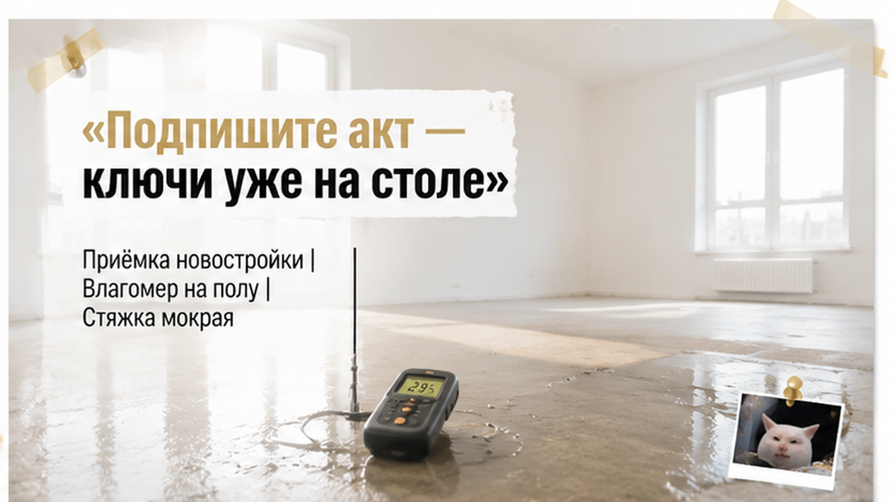
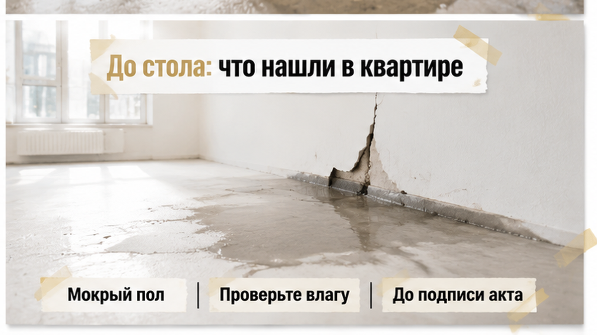
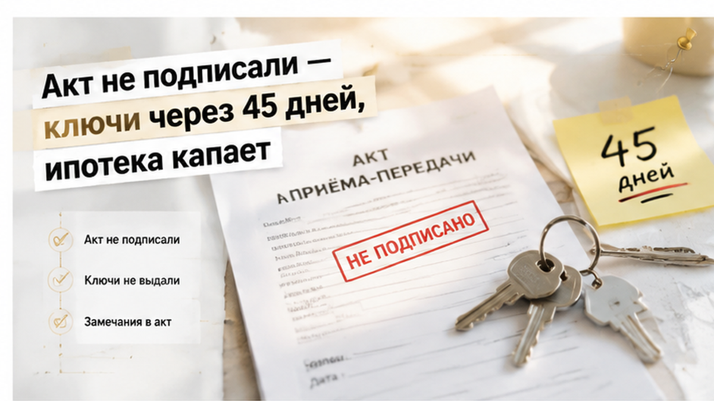
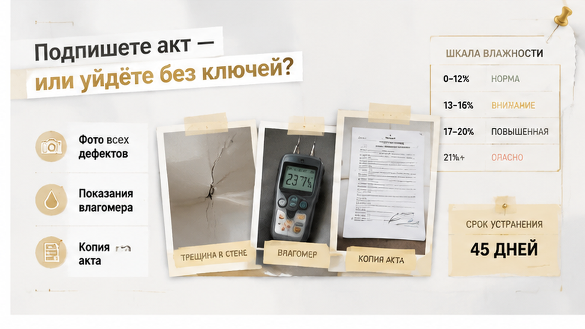

Ключи лежали на столе. Конец августа, переговорная застройщика в Тюмени, двое детей ждут во дворе с бабушкой, у родителей ипотека и съёмная квартира, из которой хотели выехать до сентября. За полчаса до этого в дальней комнате отец наступил на тёмное пятно — стяжка была мокрая, будто пол только что поливали. Менеджер сказал мягко: подпишите акт сегодня, а сырость поправим в рабочем порядке. Семья не подписала. Ключи уехали со стола обратно в ящик, а новую дату назвали через сорок пять дней.
Разбираю такие приёмки по Тюмени каждую неделю: что написали в бумаге, чем кончилось, сколько семья доплатила за аренду. Святослав Шакин, «The Риэлтор», Тюмень.
Telegram: t.me/Tyumen_Rieltor · MAX: max.ru/id561413315447_biz

Переговорная у застройщика устроена так, что торопиться начинаешь сам. Стол, вода в стаканах, папка с бумагами и связка ключей с биркой, а на бирке — номер твоей квартиры.
Никто не кричит и не давит. Наоборот, говорят по-человечески: «Ребята, вы же три года ждали. Давайте не будем тянуть, недостатки мы всё равно устраним — это наша обязанность».
Работает почти всегда. Потому что напротив сидят люди, которые три года платили ипотеку за воздух и снимали чужую квартиру.
Только подписывают в эту минуту не «согласие взять ключи». Передаточный акт — это бумага, где сказано: квартиру приняли. Приняли такой, какая она есть, вот сегодня, вот в этом виде. С этого дня она ваша: ваша коммуналка, ваше содержание, ваш ремонт. И разговор про мокрый пол превращается из «сдайте нам нормальную квартиру» в «помогите, пожалуйста, у нас там сыро».
Есть вторая бумага, и её постоянно путают с первой. Акт осмотра, он же перечень недостатков, — это просто список того, что вы нашли: где мокро, где трещина, где дует. Он ничего не передаёт и ничего не закрывает. Его можно подписать хоть в тот же день, это нормально.
А передаточный акт — финальный. Если вам протягивают один лист и говорят «тут всё сразу», прочитайте заголовок вслух. Иногда после этого менеджер сам достаёт второй бланк.
Подписывать не обязаны, пока квартира не такая, как в договоре. Речь про серьёзные вещи — мокрый пол, трещину, холодное окно, а не про царапину на подоконнике. Это не скандал и не хитрость. Никто не должен брать ключи под честное слово.
И ещё деталь, которую семья в тот день проверила почти случайно. У человека за столом должна быть доверенность на подписание акта от застройщика. Не бейдж, не визитка, не «я тут за старшего», а бумага с его фамилией и полномочиями. Поставит подпись тот, кому это не поручено, — разбираться потом будете вы. Историю, где ключи от тюменской новостройки перенесли на год, а деньги на эскроу так и висели, я уже разбирал — там всё началось с такой же вежливой просьбы подписать сегодня.

Смотреть приехали днём — единственное правильное решение за то утро. Свет из окон падал на пол, и пятно в дальней комнате было видно от самого порога: участок темнее остального пола, метра полтора в ширину, ближе к наружной стене.
Отец присел, провёл ладонью. Не «недавно мыли», а сыро и прохладно. Положили сверху лист бумаги из папки, подержали минуту, подняли — бумагу повело волной. Ни приборов, ни процентов, просто рука и лист. Но этого хватило, чтобы понять: класть на такой пол ламинат в сентябре нельзя.
Дальше пошли по кругу: стены, окна, двери, розетки. В той же комнате нашли трещину — наискось от угла оконного проёма вверх, выше уровня руки. Тонкая, но длинная, и штукатурка вдоль неё крошилась под ногтем. В спальне ребёнок первым сказал: «Тут дует». Подоконник был холоднее стены, по краю рамы тянуло. В августе это игра. В январе это детская, которую не прогреть.
Снимали сразу, не откладывая на потом. Фото общим планом, чтобы видно было комнату целиком, потом крупно — пятно, трещина, стык окна. Отдельно короткое видео: человек идёт по квартире и вслух называет, что снимает, в какой комнате, какого числа. Это не юридический трюк, а страховка от разговора «а где доказательства, что было именно так». Через два месяца никто не вспомнит, где темнел пол. Файл с датой вспомнит.
Представитель застройщика ходил рядом и почти не спорил. Про стяжку сказал: «Дом сохнет, это нормально». Про трещину: «Усадочная, зашпаклюют». Про подоконник: «Отрегулируем створку».
Ни одно из этих слов не попало ни в одну бумагу. Там, в пустой комнате, а не потом у стола, и стало ясно: между «мы всё поправим» и «мы обязались поправить» разница ровно одна — запись.

У стола голос стал суше. Ручку подвинули ближе, ключи лежали на виду. «Ребята, подпишите сегодня, всё закроем в рабочем порядке. Вы же не хотите ездить сюда третий раз».
Они не подписали. Попросили бланк перечня недостатков и вписали туда три пункта своими словами, без умных формулировок: мокрая стяжка в дальней комнате, трещина в стене над окном, дует и мёрзнет подоконник в спальне. Внизу — число, две подписи. И главное: второй экземпляр забрали с собой. Не «мы отсканируем и пришлём завтра», а лист в руках, тут же переснятый на телефон прямо на столе.
Такую паузу может взять любой покупатель: пока квартиру не довели до того, что в договоре, акт можно не подписывать. Если спорят, серьёзный это дефект или мелочь, — подключают независимого специалиста. «Нам кажется, всё нормально» — уже не последнее слово застройщика. Отказ на приёмке — не скандал и не каприз, а обычный порядок.
Цена паузы пришла через неделю, звонком: устранение — примерно сорок пять дней, ключи после. Бумаги с этим сроком не дали. Вот здесь начинается самая неприятная часть: сорок пять дней на словах — это не обязательство, а прогноз погоды. Никто не назвал дату, к которой пол будет сухим.
А платежи шли своим ходом. Ипотека живёт не с того дня, когда в замке повернулся ключ, а с того, когда банк выдал деньги. Плюс съёмная квартира, из которой семья собиралась выехать в сентябре. Два платежа в месяц: за жильё, где живёшь, и за жильё, где не живёшь. Двое детей, чемоданы у стены, сентябрь на календаре.
И то, чем пугают чаще всего, поэтому скажу прямо: отказ подписать акт ипотеку не ломает. Банк не отзывает кредит и не поднимает ставку из-за того, что вы не приняли квартиру с сырым полом. Сдвигается другое — регистрация права, налоговый вычет, даты по страховке, переезд. Дорого по нервам, больно по деньгам, но это проблема месяцев, а не потеря квартиры. Куда чаще сделки рассыпаются раньше: ипотеку одобрили, а эскроу так и не открыли — и семья висит между банком и застройщиком. Или берут транш за рубль в месяц и не считают, что будет после сдачи дома.
Самое дорогое на приёмке — не рулетка и не тепловизор. Самое дорогое — бумага, которую вы увезёте с собой. В квартире вы будете час, ну полтора. Дальше останется только то, что записано и подписано с двух сторон. Всё остальное — «нам обещали».
Вписанный недостаток потом можно доказывать. Не вписанный — не существует вообще.
Разбираю приёмки и договоры новостроек по Тюмени: где давят, что можно не подписывать, чем это заканчивается.
Telegram: t.me/Tyumen_Rieltor · MAX: max.ru/id561413315447_biz
В той переговорной решение приняли за пять минут молчания. Кто-то на их месте взял бы ключи и разбирался с мокрой комнатой уже как хозяин: быстрее переезд, быстрее ремонт, а сырость «всё равно высохнет». Застройщик обещает всё исправить после подписи — вы подпишете акт или уйдёте без ключей?

Тот же принцип, что и в истории, где скидку в два миллиона обещали, а риск прятали в самой квартире: смотрят не на подарок, а на документы.
Приёмка кажется страшной только потому, что человек приезжает на неё вслепую. Квартиру видит первый раз, бумаги первый раз, менеджера с ключами тоже первый раз. За полтора часа принять правильное решение на миллионы тяжело. За неделю до — легко.
Поэтому порядок обратный привычному: сначала вы читаете свой договор — что там про передачу и про сроки устранения недостатков, — потом узнаёте, кто именно будет подписывать акт, и только затем едете смотреть стены. На объекте тогда остаётся одна задача: спокойно записать факты. Разобрать порядок приёмки до визита стоит один вечер. Мокрая стяжка стоит сорок пять дней аренды — и это в лучшем случае.